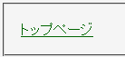
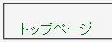

2003-03-22更新。原因が分かりました。
全称セレクタ（*）や全称セレクタを含むセレクタ（html * など）に対して box-sizing: border-box; というスタイルを適用させた場合、これらのセレクタにマッチする要素内でリンク文字列にデフォルトで設定されている下線が表示されない。
a:link { color: #0000ff; }
a:visited { color: #006400; }
a:hover { background: #ffe4e1; }
a:active { color: #ff4500; }
<style type="text/css">
#sa * {
box-sizing: border-box;
}
</style>
<p id="sa">
<a href="../../index.html">トップページ</a>
</p>
下線に関するスタイル（text-decorationプロパティ）は指定していません。
Moz1.0.2での表示（標準モード）
Opera7.03での表示（標準モード）
text-decorationプロパティで下線装飾を明示することでこのバグを回避できます。
<style type="text/css">
a.und {
text-decoration: underline;
}
</style>
<p id="sa">
<a class="und" href="../../index.html">トップページ</a>
</p>
Opera7.03では標準・互換モードの両方で不具合の発生が確認されました。